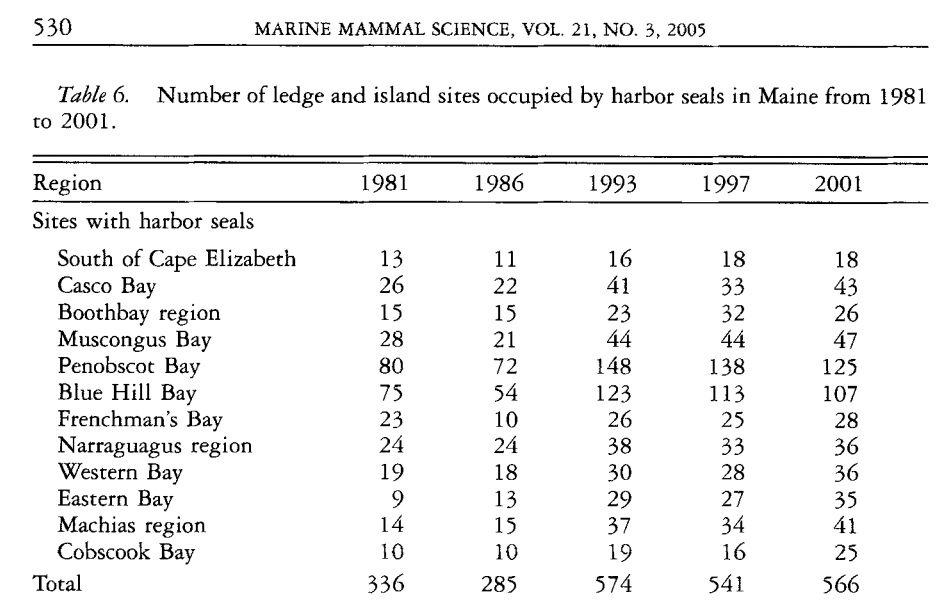
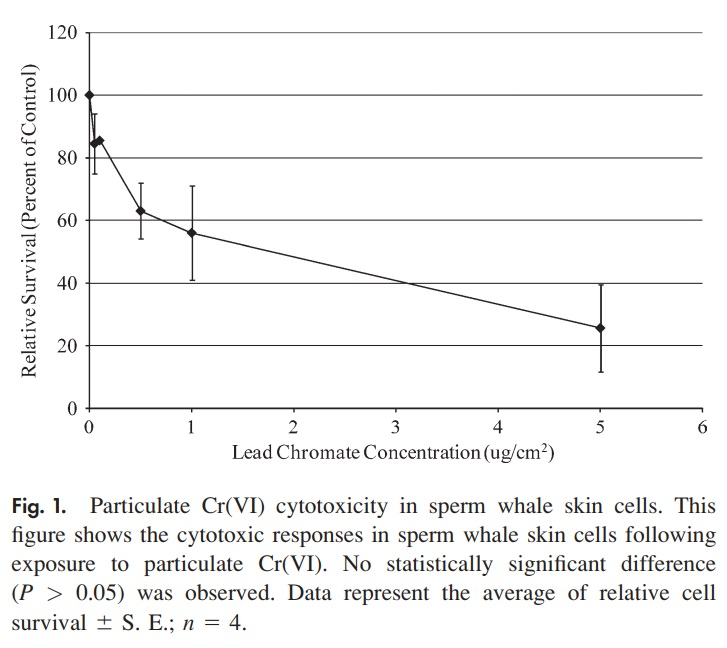
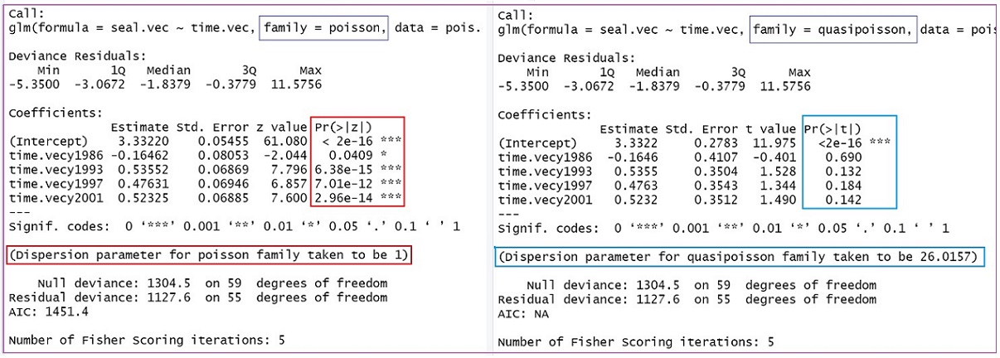
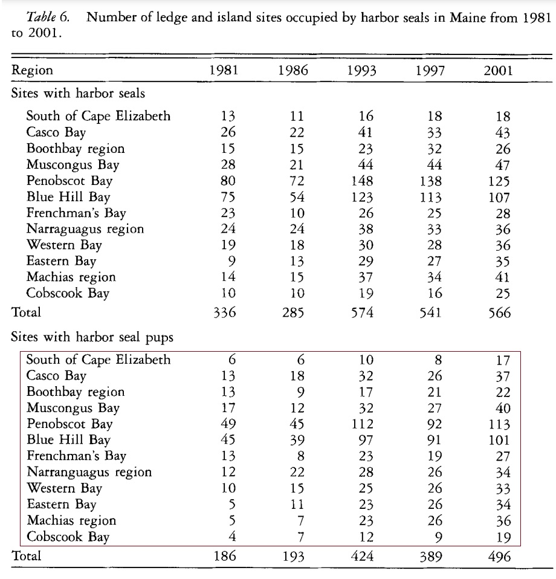

Topic 14 Analysis of Counts and Rates
This module considers the relationship between a discrete response variable and other numeric or categorical predictor variables. The analysis of frequency counts and rates is also one of the important statistical tools in life science. The appropriate model we will discuss is a small family of generalized linear models - The Poisson regression model. It has wide applications for both laboratory experimental data and field data which involve count or rate data.
We add this model to the summary table of models in the previous module as follows
| Response variable | Predictor variable | Type of Models |
|---|---|---|
| continuous, normal | single categorical | ANOVA |
| continuous, normal | single continuous | SLR |
| continuous, normal | continuous or categorical | MLR (ANCOVA) |
| binary, categorical | continuous or categorical | logistic model |
| numeric, discrete | continuous or categorical | Poisson model |
14.1 Motivational Examples
Example 1: Aerial counts of harbor seals (Phora vitulzna concoZw) on ledges along the Maine coast were conducted during the pupping season in 1981, 1986, 1993, 1997, and 2001 to study the changes in abundance of harbor seals. Detailed information on the study can be found in the published work of Gilbert et al (2005) see the link of the article.

We are interested in whether the counts of harbor seal counts changed significantly over the years. The data used to answer this question is taken from the first half of Table 6.

We construct the R data set in the following based on the above data table that is suitable for modeling.
Example 2: This example is based on a study that investigated the cytotoxic and genotoxic effects of soluble and particulate hexavalent chromium in sperm whale skin fibroblasts. The data were extracted from a line plot in the published work of Wise et al (Fig. 1). In the first experiment, Particulate Cr(VI) induced a clear concentration-dependent decrease in cell survival over a range of 0.05 to 0.5 lg/cm2. Concentrations of 0.05, 0.1, 0.5, 1, and 5 lg/cm2 lead chromate induced 85%, 86%, 63%, 56%, and 26% relative survival. This information is given in the following figure 1 of the published paper.

| Dose level | survived cells | total cells |
|---|---|---|
| 0 | 100 | 100 |
| 0.05 | 85 | 100 |
| 0.1 | 86 | 100 |
| 0.5 | 63 | 100 |
| 1 | 56 | 100 |
| 5 | 26 | 100 |
The question is whether the survival rates are associated with the dose level.
14.2 Poisson Regression for Counts and Rates
The Poisson regression model assumes the random response variable to be a frequency count or a rate of an uncommon event such as COVID-19 positivity rates, COVID-19 death mortality, etc. As in the linear and logistic regression models, we also assume that predictor variables are non-random.
14.2.1 Structure and Interpretations
Let \(Y\) be the response variable that takes on frequency counts as values and \(X\) be the set of predictor variables such as demographics and social determinants. Further, let \(\mu=E[Y]\) be the mean of the response variable.
Poisson Regression for Counts
The Poisson regression model is defined in the following analytic expression.
\[ \log(\mu) = \beta_0 + \beta_1 x_1 + \beta_2 x_2 + \cdots + \beta_p x_p, \] where \(\beta_0, \beta_1, \cdots, \beta_p\) are coefficients of the Poisson regression model.
Poisson Regression for Rates
The Poisson regression model for rates is defined in the following analytic expression.
\[ \log(\mu/t) = \beta_0 + \beta_1 x_1 + \beta_2 x_2 + \cdots + \beta_p x_p, \]
where \(\beta_0, \beta_1, \cdots, \beta_p\) are coefficients of the Poisson regression model. \(t\) is called the offset variable. The offset variable serves to normalize the fitted cell means per some space, grouping, or time interval in order to define the meaningful rates.
Interpretation of Regression Coefficients
The interpretation of the regression coefficient \(\beta_i\) is as follows
\(\beta_0\) = the baseline logarithm of the mean of \(Y\), \(\log(\mu)\), when all predictor variables \(x_i = 0\), for \(i = 1, 2, \cdots, p\). As usual, we are not interested in the inference of the intercept parameter.
\(\beta_i\) = is the change of the logarithm of the mean count due to one unit increases in \(x_i\) with all other \(x_j\) being fixed, for \(j\ne i\).
Estimation of Regression Coefficients
Estimating Poisson regression coefficients requires numerical optimization. We will not go into detail about how to estimate the regression coefficients and perform model diagnostics in this module. Instead, we will focus on data analysis, in particular, the interpretation of regression coefficients.
14.2.2 Assumptions and Goodness-of-fit
Like other statistical models, there are some assumptions for the Poisson regression model:
The response variable is a frequency count (or rate variable) that follows the Poisson distribution.
The mean of the and the variance are equal.
The relationship between the mean of the response and the predictor variables is correct.
For a given value of the predictor variable, the mean and variance of the response variable are equal. - Unfortunately, this assumption is frequently violated. This type of violation is serious since it produces wrong estimates of the standard errors and, hence, yields wrong p-values.
14.2.3 Dispersion Issue and Remedies
The first three assumptions mentioned above are regular for all regression models. The violation of the last assumption is directly associated with the distribution of the response variable. Different causes lead to the violation. For example, the data is not from Poisson distribution or a mixture distribution of Poisson and other distributions. Therefore, there are different ways we can consider to fix the problem.
Although the detailed discussion of remedies is not the focus of this course, it is useful to know some of the available remedies for dispersion (either over-dispersion or under-dispersion).
quasi-Poisson regression sticks to the simple structure of the Poisson regression and adjusts the dispersed standard error to obtain the valid p-values. We will use this approach in this class.
negative binomial regression, another family regression model for the discrete response variable, relaxes Poisson’s assumption on equality of mean and variance. In the negative binomial regression, the variance is a function of the mean. It could also have dispersion problems if the variance function is not correct. The negative binomial regression is implemented in R.
Zero-inflated family of regression models assumes the data come from the mixture distribution of Poisson and other distributions such as binomial or negative binomial and binomial distributions. R also has libraries to fit several zero-inflated regression models.
The Hurdle model also handles the issue of excess zeros in the data but assumes the sources of zeros in the data are different. Hurdle assumes structural zero and the regular zero-inflated model assumes sampling zeros.
We will use Poisson regression to detect potential dispersion and then decide whether to use the regular Poisson regression model to report and implement in practical applications.
14.2.4 Data Structure of Poisson Regression
The Poisson regression is a subfamily of generalized linear regressions(GLM). The logistic regression is also a member of GLM. Similar to the structure used in the logistic regression, Poisson regression also requires the same data structure usually called the long table.
The data table in the first motivational example is not a long table. It is actually a wide table. The table in example 2 is a long table. When using R to build models in GLM, the data should always be in the form of a long table. Therefore, the data table in motivational example 1 cannot be used to build GLMs. The code for turning the wide table into a long table is given in Section 2. The resulting long table (partial table) is shown below.
y1981=c(13, 26, 15, 28, 80, 75, 23, 24, 19, 9, 14, 10)
y1986=c(11, 22, 15, 21, 72, 54, 10, 24, 18, 13, 15, 10)
y1993=c(16, 41, 23, 44, 148, 123, 26, 38, 30, 29, 37, 19)
y1997=c(18, 33, 32, 44, 138, 113, 25, 33, 28, 27, 34, 16)
y2001=c(18, 43, 26, 47, 125, 107, 28, 36, 36, 35, 41, 25)
seal.vec = c(y1981, y1986, y1993, y1997, y2001)
time.vec = sort(rep(c("y1981", "y1986", "y1993", "y1997", "y2001"), 12))
pois.data= data.frame(cbind(seal=seal.vec, time=time.vec))n=dim(pois.data)[1]
partial.long.table = pois.data[sample(1:n, n, replace = FALSE), ][1:10,]
pander(partial.long.table, caption="Part of the converted long table from the harbor seal data table")| seal | time | |
|---|---|---|
| 19 | 10 | y1986 |
| 39 | 32 | y1997 |
| 53 | 125 | y2001 |
| 8 | 24 | y1981 |
| 11 | 14 | y1981 |
| 20 | 24 | y1986 |
| 22 | 13 | y1986 |
| 31 | 26 | y1993 |
| 10 | 9 | y1981 |
| 17 | 72 | y1986 |
14.3 Case Studies
We will use the two motivational examples in this section. As mentioned earlier, the Quasi-Poisson Regression is a generalization of the Poisson regression and is used when modeling an overdispersed count variable.
The Poisson model assumes that the variance is equal to the mean, which is not always a fair assumption. When the variance is greater than the mean, a Quasi-Poisson model, which assumes that the variance is a linear function of the mean, is more appropriate.
For each example, we will fit both Poisson and quasi-Poisson regression models.
14.3.1 Harbor Seal Data
We will use the long table to fit the two models. Which is to choose to report will depend on the dispersion parameter. Next, we use the R function glm() to fit Posson and quasi-Poisson models in the following.
pois.model = glm(seal.vec ~ time.vec, family=poisson, data = pois.data)
summary.table.pois = summary(pois.model)
##
quasi.pois.model = glm(seal.vec ~ time.vec, family=quasipoisson, data = pois.data)
summary.table.quasi.pois = summary(quasi.pois.model)The complete outputs of the two models from R function glm() are given in the following figure.
 We can observe several pieces of information from the above figure.
The regression coefficients in both Poisson and quasi-Poisson regression models are identical.
The standard errors in the Poisson regression model are less than their corresponding standard errors in the quasi-Poisson regression model.
The dispersion parameter is forced to be 1 in the Poisson regression model. However, the dispersion parameter is calculated through the quasi-likelihood that yields the value of dispersion parameter 26.0157. This is much bigger than 1 (for the Poisson regression model). Therefore, the p-values in the output of the regular Poisson regression model are not reliable. The inference should be based on the output of the quasi-Poisson model.
The p-values in the quasi-Poisson regression can be extracted in the following table.
example.coef.table = summary.table.quasi.pois$coef
pander(example.coef.table, caption="The summary statistics based on
the quasi-Poisson regression model")| Estimate | Std. Error | t value | Pr(>|t|) | |
|---|---|---|---|---|
| (Intercept) | 3.332 | 0.2783 | 11.98 | 0.00000000000000005951 |
| time.vecy1986 | -0.1646 | 0.4107 | -0.4008 | 0.6901 |
| time.vecy1993 | 0.5355 | 0.3504 | 1.528 | 0.1321 |
| time.vecy1997 | 0.4763 | 0.3543 | 1.344 | 0.1843 |
| time.vecy2001 | 0.5232 | 0.3512 | 1.49 | 0.1419 |
All p-values associated with the survey year are insignificant. The baseline year is 1981 (which is not in the output), this means that counts of harbor seals in any of the survey years were not significantly from the baseline year (1981).
14.3.2 Toxicity Study
This case study is based on the second motivational example. The analysis in the original article involves errors. The statistical problem is a rate regression, the analysis in the original paper used ANOVA which led to a wrong conclusion. Two different methods will be used to assess the association between the concentration and the survival of cells.
14.3.2.1 Poisson Regression
We can simply use the summarized table extracted from the original article given in Section 2. This is a small data set with only 6 observations and three variables: dose(continuous), survival(discrete - count), and total (discrete - count, which can only be used as an offset variable in the model).
dose = c(0, 0.05, 0.1, 0.5, 1, 5)
survived=c(100, 85, 86, 63, 56, 26)
total = c(100, 100, 100, 100, 100, 100)
pois.data = data.frame(cbind(survived=survived, dose=dose, total = total))Next, we fit the quasi-Poisson to the above data and check the dispersion parameter to see whether the regular Poisson regression is appropriate.
quasi.pois=glm(survived ~ dose + offset(total), family = quasipoisson, data = pois.data)
disp = summary(quasi.pois)$dispersion
pander(cbind(dispersion=disp), caption = "The dispersion paramter of the Poisson regression")| dispersion |
|---|
| 1.579 |
pois=glm(survived ~ factor(dose) + offset(total), family = poisson, data = pois.data)
coef=summary(pois)$coef
pander(coef, caption = "Summary statistics of the regression coefficients")| Estimate | Std. Error | z value | Pr(>|z|) | |
|---|---|---|---|---|
| (Intercept) | -95.39 | 0.1 | -953.9 | 0 |
| factor(dose)0.05 | -0.1625 | 0.1475 | -1.102 | 0.2706 |
| factor(dose)0.1 | -0.1508 | 0.1471 | -1.026 | 0.3051 |
| factor(dose)0.5 | -0.462 | 0.1609 | -2.872 | 0.004073 |
| factor(dose)1 | -0.5798 | 0.1669 | -3.474 | 0.0005129 |
| factor(dose)5 | -1.347 | 0.2201 | -6.119 | 0.0000000009406 |
14.3.2.2 Logistic Regression Approach (optional)
Since the logistic regression requires the response to be binary, we need to perform some data management to create a suitable data set for the logistic regression model.
Data Preparation
The data reported in the experiment are the percentage of survival of cells with the given total number of cells that died and survived respectively at different levels of concentration. We assume 100 cells were used at each concentration. So we retrieved the data table from the chart in the original paper and summarized it in Section 2. Next, we create a long table and fit the Poisson model to the data. The idea is each column will record the information of each cell. The layout of the long table to be used in the Poisson and quasi-Poisson regression model is depicted in the following:
| cell ID | dose | survival | total |
|---|---|---|---|
| 1 | 0 | 1 | 1 |
| 2 | 0 | 1 | 1 |
| … | … | … | … |
| 100 | 0 | 1 | 1 |
| 101 | 0.05 | 1 | 1 |
| … | … | … | … |
| 185 | 0.05 | 1 | 1 |
| 186 | 0.05 | 0 | 1 |
| 187 | 0.05 | 0 | 1 |
| … | … | … | … |
| … | … | … | … |
| 501 | 5 | 1 | 1 |
| 502 | 5 | 1 | 1 |
| … | … | … | … |
| 526 | 5 | 1 | 1 |
| 527 | 5 | 0 | 1 |
| 526 | 5 | 0 | 1 |
| … | … | … | … |
| 599 | 5 | 0 | 1 |
| 600 | 5 | 0 | 1 |
We define the long table in the following code.
cell.id = 1:600 # cell ID, not a meaningful variable!
total = rep(1,600) # the "total" of each cell is simply equal to 1.
dose.0 = rep(1, 100) # all 100 cells survived with concentration level 0
dose.005 = c(rep(1,85), rep(0,15)) # 85 cells survived and 15 died at concentration level 0.05
dose.0.1 = c(rep(1,86), rep(0,14)) # 86 cells survived and 14 died at concentration level 0.1
dose.0.5 = c(rep(1,63), rep(0,37)) # 63 cells survived and 37 died at concentration level 0.5
dose.1 = c(rep(1, 56), rep(0,44)) # 56 cells survived and 44 died at concentration level 1
dose.5 = c(rep(1,26), rep(0,74)) # 26 cells survived and 74 died at concentration level 5
survival = c(dose.0, dose.005, dose.0.1, dose.0.5, dose.1, dose.5)
# next line of code defines an indicator telling the concentration level of each cell
dose = c(rep(0, 100), rep(0.05, 100), rep(0.1, 100), rep(0.5, 100), rep(1, 100), rep(5, 100))
## The long table is defined in the following one line of code
toxic.data = data.frame(cbind( cell.id = cell.id, survival = survival, dose=dose, total = total))Model Building
This is a typical Poisson rate regression problem. As usual, we will fit both Poisson rate and quasi-Poisson rate models to the data set and then look at the dispersion parameter to decide which model should be used.
Based on the extracted data, the sample size is 600. The following quasi-Poisson regression model indicates that there is no significant dispersion issue for the Poisson regression model.
logit.model = glm(survival ~ dose, family = binomial, data = toxic.data)
logit.summary = summary(logit.model)$coef
pander(logit.summary, caption = "Summary statistics on the regression coefficients")| Estimate | Std. Error | z value | Pr(>|z|) | |
|---|---|---|---|---|
| (Intercept) | 1.519 | 0.1199 | 12.67 | 9.23e-37 |
| dose | -0.5635 | 0.05662 | -9.952 | 0.00000000000000000000002462 |
The regression coefficient associated with dose is negative meaning that as the dose increases the log-odds of survival decrease. To be more specific, we exponentiate the coefficient of dose and obtain $exp(-0.5635) = 0.5692 = 1 -43.08 $. This means that, as the dose increase by one unit, the odds of survival of the skin cells decreases about 43.08%.
Conclusion
In summary, the logistic regression yields the same result as that from the Poisson regression. The concentration of lead chromate is negatively associated with the survival of the skin cells of the sperm whale.
14.3.2.3 Pearson \(\chi^2\) Test of Independence Approach
We can also answer the original question by testing the hypothesis that the concentration does not affect survival (independence test). This method only provides whether there is an association between concentration and survival but not the direction and magnitude of the association. To prepare for the Pearson \(\chi^2\) test, we need to construct a \(2\times k\) table in the following.
| surv.status | level-0.0 | level-0.05 | level-0.1 | level-0.5 | level-1 | level-5 |
|---|---|---|---|---|---|---|
| survived | 100 | 85 | 86 | 63 | 56 | 26 |
| died | 0 | 15 | 14 | 37 | 44 | 74 |
We next construct the observed table in R and then perform the \(\chi^2\) test.
source("https://raw.githubusercontent.com/pengdsci/STA501/main/ref/w12-table2x2Calculator.txt")
survived=c(100, 85, 86, 63, 56, 26)
died = 100 - survived
obs.table = rbind(survived = survived, died = died)
colnames(obs.table) = as.character(c(0, 0.05, 0.1, 0.5, 1, 5))
chi.test = Pearson.chisq(obs.table)$inference
pander(chi.test, caption="Pearson chi-square test of independence of concentration and survival")| ts.stats | p.value | d.f | method |
|---|---|---|---|
| 167.4018 | 0 | 5 | Pearson’s Chi-squared test |
The Pearson \(\chi^2\) test indicates that the concentration level of lead chromate is NOT independent of the survival of the skin cell of the sperm whale. Although the test itself does not give the direction of the association, we can find the information plot plotting the concentrations and survival rates.
14.4 Concluding Remarks
Comparing multiple unrelated proportions (rates) is one of the important methods in analyzing laboratory data. We have summarized several different methods above to address different types of comparison questions that may arise in the actual research hypotheses. It is not as straightforward as the comparison for multiple population means since it requires different and more advanced statistical tools to address the specific comparison questions.
There are several other recently developed procedures in the literature. Some of these new methods have been implemented in software packages.
we can also use the command prop.test() to test the equality of multiple proportions.
The Marascuilo procedure enables us to simultaneously test the differences of all pairs of proportions when there are several populations under investigation
One most recently (2017) developed one-way ANOVA-like method uses the idea of the likelihood ratio test.
14.5 Practice Problems
We have assessed the association between the harbor seal count observed in Maine’s coastal regions and time (different survey years between 1981 and 2001) using both Poisson and quasi-Poisson regression. In this assignment, you assess the association between the counts of harbor seal pubs and the time. The data table is given below (the frequency counts are in the red box of the following table)

To save your time, define a vector for each survey year in the following code chunk.
y.1981=c(6, 13, 13, 17, 49, 45, 13, 12, 10, 5, 5, 4)
y.1986=c(6, 18, 9, 12, 45, 39, 8, 22, 15, 11, 7, 7)
y.1993=c(10, 32, 17, 32, 112, 97, 23, 28, 25, 23, 23, 12)
y.1997=c(8, 26, 21, 27, 92, 91, 19, 26, 26, 26, 26, 9)
y.2001=c(17, 37, 22, 40, 113, 101, 27, 34, 33, 34, 36, 19)Please refer to the case study in the class note to analyze the data and draw conclusions to address the research question. To be more specific, you are expected to answer the following question.
Fit both regular and quasi-Poisson regression models.
Pick a model as the final model and justify your choice.
Comment on the dispersion and interpret the output of the final model.
Write a separate paragraph to summarize the results and draw a conclusion.